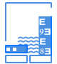

水文大数据共享平台
www.tomylee.top
- 搜索
联系电话：400-882-8868
水文大数据共享平台
www.tomylee.top
联系电话：400-882-8868
历史摘录信息类 实时体现水文数据实时体现水文数据
历史旬信息类 实时体现水文数据实时体现水文数据
历史月信息类 实时体现水文数据实时体现水文数据
历史年信息类 实时体现水文数据实时体现水文数据
实测调查信息类 实时体现水文数据实时体现水文数据
水质库类 实时体现水文数据实时体现水文数据
实时信息类 实时体现水文数据实时体现水文数据
2015年长江水系数据 2015年长江水系数据介绍2015年长江水系数据介绍2015年长江水系数据介绍2015年长江水系数据介绍2015年长江水系数据介绍2015年长江水系...dasdasd sadadadad
2015年长江水系数据 2015年长江水系数据介绍2015年长江水系数据介绍2015年长江水系数据介绍2015年长江水系数据介绍2015年长江水系数据介绍2015年长江水系...dasdasd sadadadad
2015年长江水系数据 2015年长江水系数据介绍2015年长江水系数据介绍2015年长江水系数据介绍2015年长江水系数据介绍2015年长江水系数据介绍2015年长江水系...dasdasd sadadadad
 长江水系地面测站
长江水系地面测站
长江水系地面测站